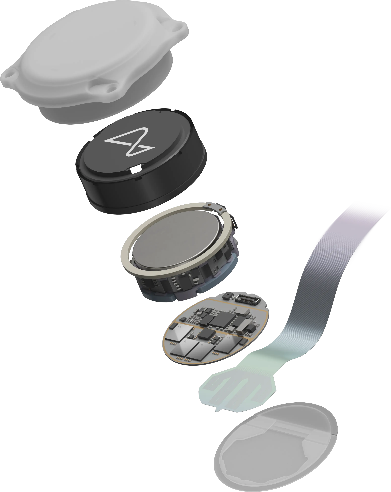
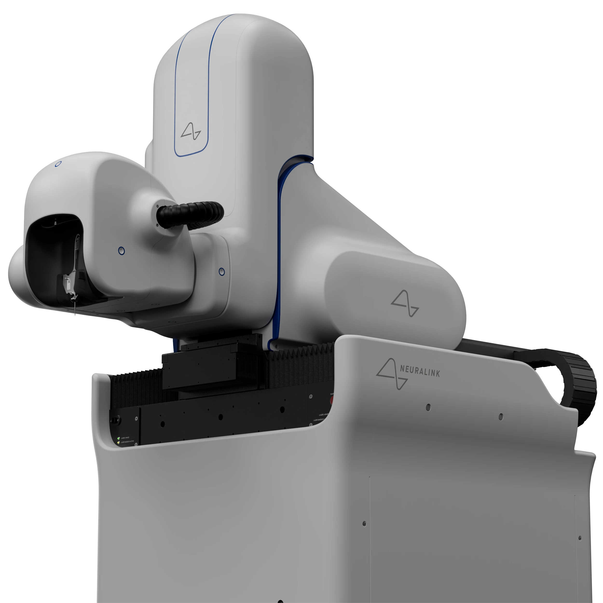

Neuralink es una interfaz cerebro-computadora (BCI) impulsada por Elon Musk, diseñada para conectar el cerebro humano con dispositivos electrónicos. Permite la comunicación neuronal con computadoras, restaurando funciones motoras y ampliando capacidades cognitivas. Este chip innovador se implanta en el cerebro y transmite datos en tiempo real a dispositivos externos.
Desde 2016, Neuralink ha avanzado en la tecnología BCI (Interfaz Cerebro-Computadora) con chips ultrafinos y biocompatibles que captan señales neuronales con alta precisión.
Utilizando un robot quirúrgico avanzado, se asegura una colocación precisa y segura en el cerebro, permitiendo una conexión más estable y efectiva. Neuralink sigue evolucionando hacia aplicaciones en el tratamiento de enfermedades neurológicas y mejora de capacidades humanas.
La protección de los datos neuronales personales es fundamental para evitar abusos y proteger la intimidad del usuario.
El alto costo inicial podría restringir el acceso a la tecnología, aumentando las desigualdades sociales.
La interacción BCI puede influir en la percepción de identidad y autonomía de los usuarios.
Implantar tecnología en el cerebro implica riesgos físicos y éticos, que requieren estrictos controles.
La regulación ética es clave para un desarrollo seguro y responsable de esta tecnología.
Para más detalles sobre Neuralink, visita el sitio oficial de Neuralink